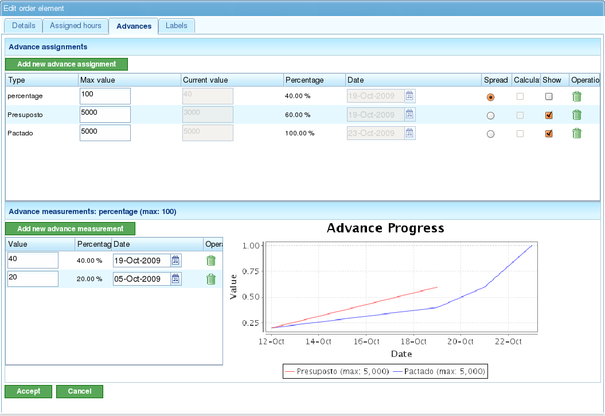

Avanzamento
Contents
L'avanzamento del progetto indica il grado in cui si sta rispettando il tempo di completamento stimato del progetto. L'avanzamento delle attività indica il grado in cui l'attività viene completata secondo il suo completamento stimato.
In generale, l'avanzamento non può essere misurato automaticamente. Un membro del personale con esperienza o una lista di controllo deve determinare il grado di completamento di un'attività o di un progetto.
È importante notare la distinzione tra le ore assegnate a un'attività o a un progetto e l'avanzamento di quell'attività o progetto. Mentre il numero di ore utilizzate può essere superiore o inferiore alle aspettative, il progetto può essere in anticipo o in ritardo rispetto al suo completamento stimato nel giorno monitorato. Da queste due misurazioni possono derivare diverse situazioni:
- Meno ore consumate del previsto, ma il progetto è in ritardo: L'avanzamento è inferiore a quello stimato per il giorno monitorato.
- Meno ore consumate del previsto e il progetto è in anticipo: L'avanzamento è superiore a quello stimato per il giorno monitorato.
- Più ore consumate del previsto e il progetto è in ritardo: L'avanzamento è inferiore a quello stimato per il giorno monitorato.
- Più ore consumate del previsto, ma il progetto è in anticipo: L'avanzamento è superiore a quello stimato per il giorno monitorato.
La vista di pianificazione consente di confrontare queste situazioni utilizzando informazioni sull'avanzamento effettuato e le ore utilizzate. Questo capitolo spiegherà come inserire le informazioni per monitorare l'avanzamento.
La filosofia alla base del monitoraggio dell'avanzamento si basa sul fatto che gli utenti definiscono il livello al quale desiderano monitorare i loro progetti. Ad esempio, se gli utenti desiderano monitorare gli ordini, devono solo inserire le informazioni per gli elementi di primo livello. Se desiderano un monitoraggio più preciso a livello di attività, devono inserire le informazioni sull'avanzamento a livelli inferiori. Il sistema aggregherà poi i dati verso l'alto attraverso la gerarchia.
Gestione dei Tipi di Avanzamento
Le aziende hanno esigenze diverse nel monitorare l'avanzamento dei progetti, in particolare le attività coinvolte. Pertanto, il sistema include i "tipi di avanzamento". Gli utenti possono definire diversi tipi di avanzamento per misurare l'avanzamento di un'attività. Ad esempio, un'attività può essere misurata in percentuale, ma questa percentuale può anche essere tradotta in avanzamento in Tonnellate in base all'accordo con il cliente.
Un tipo di avanzamento ha un nome, un valore massimo e un valore di precisione:
- Nome: Un nome descrittivo che gli utenti riconosceranno quando selezionano il tipo di avanzamento. Questo nome dovrebbe indicare chiaramente che tipo di avanzamento viene misurato.
- Valore Massimo: Il valore massimo che può essere stabilito per un'attività o un progetto come misurazione dell'avanzamento totale. Ad esempio, se si lavora con le Tonnellate e il massimo normale è 4000 tonnellate, e nessuna attività richiederà mai più di 4000 tonnellate di qualsiasi materiale, allora 4000 sarebbe il valore massimo.
- Valore di Precisione: Il valore di incremento consentito per il tipo di avanzamento. Ad esempio, se l'avanzamento in Tonnellate deve essere misurato in numeri interi, il valore di precisione sarebbe 1. Da quel momento in poi, solo numeri interi possono essere inseriti come misurazioni dell'avanzamento (ad es. 1, 2, 300).
Il sistema ha due tipi di avanzamento predefiniti:
- Percentuale: Un tipo di avanzamento generale che misura l'avanzamento di un progetto o di un'attività in base a una percentuale di completamento stimata. Ad esempio, un'attività è completata al 30% su un 100% stimato per un giorno specifico.
- Unità: Un tipo di avanzamento generale che misura l'avanzamento in unità senza specificare il tipo di unità. Ad esempio, un'attività prevede la creazione di 3000 unità e l'avanzamento è di 500 unità sul totale di 3000.

Amministrazione dei Tipi di Avanzamento
Gli utenti possono creare nuovi tipi di avanzamento come segue:
- Andare alla sezione "Amministrazione".
- Fare clic sull'opzione "Gestisci tipi di avanzamento" nel menu di secondo livello.
- Il sistema visualizzerà un elenco dei tipi di avanzamento esistenti.
- Per ogni tipo di avanzamento, gli utenti possono:
- Modificare
- Eliminare
- Gli utenti possono quindi creare un nuovo tipo di avanzamento.
- Quando si modifica o si crea un tipo di avanzamento, il sistema visualizza un modulo con le seguenti informazioni:
- Nome del tipo di avanzamento.
- Valore massimo consentito per il tipo di avanzamento.
- Valore di precisione per il tipo di avanzamento.
Inserimento dell'Avanzamento per Tipo
L'avanzamento viene inserito per gli elementi d'ordine, ma può anche essere inserito tramite un collegamento rapido dalle attività di pianificazione. Gli utenti sono responsabili di decidere quale tipo di avanzamento associare a ciascun elemento d'ordine.
Gli utenti possono inserire un unico tipo di avanzamento predefinito per l'intero ordine.
Prima di misurare l'avanzamento, gli utenti devono associare il tipo di avanzamento scelto all'ordine. Ad esempio, potrebbero scegliere l'avanzamento percentuale per misurare l'avanzamento sull'intera attività o un tasso di avanzamento concordato se le misurazioni di avanzamento concordate con il cliente verranno inserite in futuro.

Schermata di Inserimento dell'Avanzamento con Visualizzazione Grafica
Per inserire le misurazioni dell'avanzamento:
- Selezionare il tipo di avanzamento a cui verrà aggiunto l'avanzamento. * Se non esiste alcun tipo di avanzamento, ne deve essere creato uno nuovo.
- Nel modulo che appare sotto i campi "Valore" e "Data", inserire il valore assoluto della misurazione e la data della misurazione.
- Il sistema memorizza automaticamente i dati inseriti.
Confronto dell'Avanzamento per un Elemento d'Ordine
Gli utenti possono confrontare graficamente l'avanzamento effettuato sugli ordini con le misurazioni effettuate. Tutti i tipi di avanzamento hanno una colonna con un pulsante di selezione ("Mostra"). Quando questo pulsante è selezionato, il grafico dell'avanzamento delle misurazioni effettuate viene visualizzato per l'elemento d'ordine.

Confronto di Diversi Tipi di Avanzamento